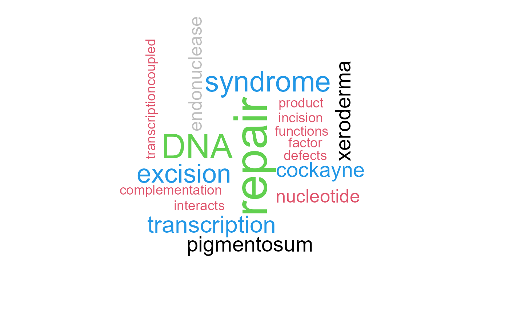
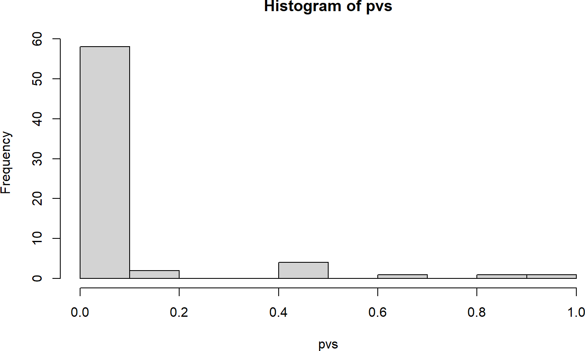
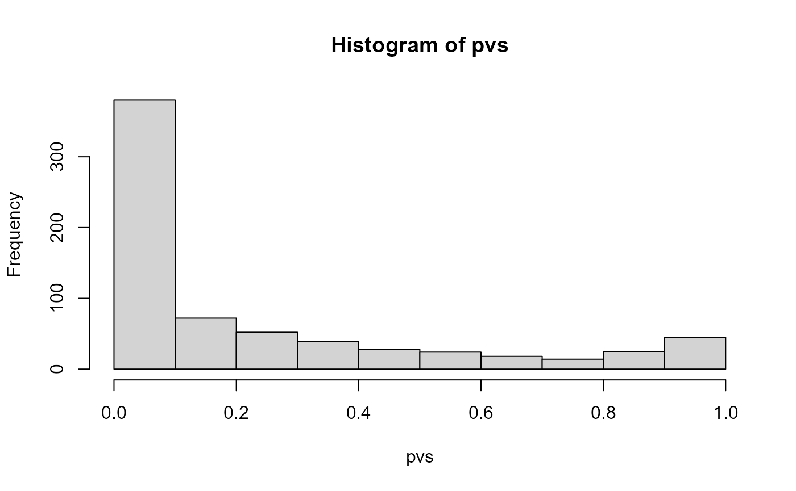
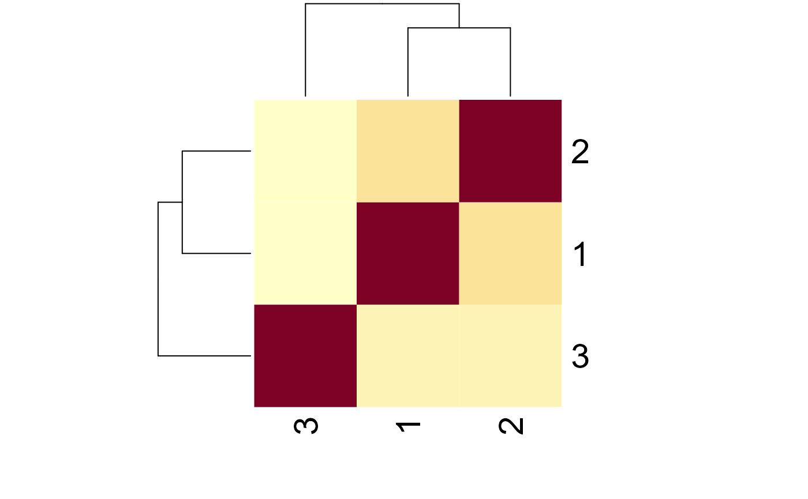

wcGeneSummary
Noriaki Sato
basic_usage_of_wcGeneSummary.RmdBasic usage
Producing word clouds
The basic usage of the package is producing a word cloud of gene
summaries by querying Entrez gene IDs. As many of the words are commonly
observed, you should limit word frequency by excludeFreq,
which is default to 5000.
## Configure input genes
inpSymbol <- c("ERCC1","ERCC2","ERCC3","ERCC4","ERCC5","ERCC6","ERCC8")
gwc <- wcGeneSummary(inpSymbol)## Input genes: 7
## Converted input genes: 7
## filtered 62 words (frequency) ...
gwc$wcA wordcloud of gene summaries.
It accepts values of the wordcloud() function.
numWords specifies how many words are to be shown on word
cloud. The function accepts the other parameters which is passed to
wordcloud().
## Use palette from palettetown, palettetown::pokepal(150) (Mewtwo!)
gwc <- wcGeneSummary(inpSymbol, random.order=FALSE,
numWords=100, excludeFreq=2000,
colors=palette(),
rot.per=0.4)## Input genes: 7
## Converted input genes: 7
## filtered 62 words (frequency) ...
gwc$wcA wordcloud of gene summaries, customized visualization
And it also returns a data frame consisting of frequency of each term.
| word | freq |
|---|---|
| repair | 16 |
| DNA | 11 |
| syndrome | 9 |
| excision | 8 |
| transcription | 7 |
| cockayne | 6 |
N-gram is supported by library tm, specified by
ngram.
gwc2 <- wcGeneSummary(inpSymbol, random.order=FALSE,
numWords=100, ngram=2,
colors=palette(), rot.per=0.4)## Input genes: 7## 'select()' returned 1:1 mapping between keys and columns## Converted input genes: 7
## filtered 62 words (frequency) ...
gwc2$wcWord clustering (pvclust) based on the occurrence in the text can be
visualized by specifying tag=TRUE.
gwcl <- wcGeneSummary(inpSymbol,
numWords=30, tag=TRUE, pal = palette(),
rot.per=0.4)## Input genes: 7## 'select()' returned 1:1 mapping between keys and columns## Converted input genes: 7
## filtered 62 words (frequency) ...
## Bootstrap (r = 0.5)... Done.
## Bootstrap (r = 0.6)... Done.
## Bootstrap (r = 0.7)... Done.
## Bootstrap (r = 0.8)... Done.
## Bootstrap (r = 0.9)... Done.
## Bootstrap (r = 1.0)... Done.
## Bootstrap (r = 1.1)... Done.
## Bootstrap (r = 1.2)... Done.
## Bootstrap (r = 1.3)... Done.
## Bootstrap (r = 1.4)... Done.
gwcl$wc
gwcl$pvcl## $clusters
## $clusters[[1]]
## [1] "pigmentosum" "xeroderma"
##
## $clusters[[2]]
## [1] "activity" "atpdependent"
## [3] "basal" "cerebrooculofacioskeletal"
## [5] "characterized" "complementation"
## [7] "damage" "defects"
## [9] "ercc" "exon"
## [11] "factor" "forms"
## [13] "functions" "helicase"
## [15] "heterodimeric" "incision"
## [17] "including" "interacts"
## [19] "nucleotide" "product"
## [21] "transcriptioncoupled"
##
## $clusters[[3]]
## [1] "dna" "repair"
##
## $clusters[[4]]
## [1] "cockayne" "excision" "syndrome" "transcription"
##
##
## $edges
## [1] 6 22 23 25Producing correlation networks
library(ggraph)
net <- wcGeneSummary(inpSymbol, plotType="network")## Input genes: 7
## Converted input genes: 7
## filtered 62 words (frequency) ...
net$netA correlation network of gene summaries
The edge label can be shown by edgeLabel=TRUE.
The threhsold of correlation can be specified by
corThresh.
net <- wcGeneSummary(inpSymbol, plotType="network", edgeLabel=TRUE, corThresh=0.5, numWords=20)## Input genes: 7
## Converted input genes: 7
## filtered 62 words (frequency) ...
net$netA correlation network of gene summaries
The clustering results based on pvclust can be shown
also on the correlation network.
net <- wcGeneSummary(inpSymbol, plotType="network", corThresh=0.2,
numWords=20, tag=TRUE)## Input genes: 7
## Converted input genes: 7
## filtered 62 words (frequency) ...
## Bootstrap (r = 0.5)... Done.
## Bootstrap (r = 0.6)... Done.
## Bootstrap (r = 0.7)... Done.
## Bootstrap (r = 0.8)... Done.
## Bootstrap (r = 0.9)... Done.
## Bootstrap (r = 1.0)... Done.
## Bootstrap (r = 1.1)... Done.
## Bootstrap (r = 1.2)... Done.
## Bootstrap (r = 1.3)... Done.
## Bootstrap (r = 1.4)... Done.
net$netA correlation network of genes with cluster information
net$pvcl## $clusters
## $clusters[[1]]
## [1] "pigmentosum" "xeroderma"
##
## $clusters[[2]]
## [1] "activity" "atpdependent" "complementation"
## [4] "defects" "factor" "functions"
## [7] "incision" "interacts" "nucleotide"
## [10] "product" "transcriptioncoupled"
##
## $clusters[[3]]
## [1] "dna" "repair"
##
##
## $edges
## [1] 2 12 13The genes associated with the corresponding words can be shown by
specifying genePlot=TRUE. The edges connecting word to
corresponding gene are shown.
net <- wcGeneSummary(inpSymbol, plotType="network", genePlot=TRUE, corThresh=0.5, tag=TRUE, edgeLink=FALSE,
numWords=20)## Input genes: 7
## Converted input genes: 7
## filtered 62 words (frequency) ...
## Bootstrap (r = 0.5)... Done.
## Bootstrap (r = 0.6)... Done.
## Bootstrap (r = 0.7)... Done.
## Bootstrap (r = 0.8)... Done.
## Bootstrap (r = 0.9)... Done.
## Bootstrap (r = 1.0)... Done.
## Bootstrap (r = 1.1)... Done.
## Bootstrap (r = 1.2)... Done.
## Bootstrap (r = 1.3)... Done.
## Bootstrap (r = 1.4)... Done.
net$netA correlation network of gene summaries with associated genes
The associated enriched pathways (if present) can be shown by
specifying genePathPlot, using ggforce. In
this option, the function first performs over-representation analysis on
the whole gene set, and plot enriched terms for included genes in the
plot.
net <- wcGeneSummary(inpSymbol, plotType="network", genePathPlot="kegg", corThresh=0.5,
tag=TRUE, edgeLink=FALSE, genePathPlotSig=0.05, numWords=20)## Input genes: 7
## Converted input genes: 7
## filtered 62 words (frequency) ...
## Bootstrap (r = 0.5)... Done.
## Bootstrap (r = 0.6)... Done.
## Bootstrap (r = 0.7)... Done.
## Bootstrap (r = 0.8)... Done.
## Bootstrap (r = 0.9)... Done.
## Bootstrap (r = 1.0)... Done.
## Bootstrap (r = 1.1)... Done.
## Bootstrap (r = 1.2)... Done.
## Bootstrap (r = 1.3)... Done.
## Bootstrap (r = 1.4)... Done.
## Found 3 enriched term ...
net$netA correlation network of gene summaries with associated genes
Text over represenatation analysis (experimental)
keggPathways <- org.Hs.egPATH2EG
mappedKeys <- mappedkeys(keggPathways)
keggList <- as.list(keggPathways[mappedKeys])
geneList <- keggList$`00785` # Lipoic acid metabolism
pvs <- textORA(geneList)
hist(pvs)
## lipoic step acid lipoateactivating
## 1.701356e-14 8.782627e-08 5.708708e-07 1.507684e-04
## lipoatedependent lipoyl
## 1.507684e-04 1.507684e-04
## chain complement class exon peptide beta
## 1.982266e-81 6.443621e-74 1.233313e-45 1.278631e-38 8.506250e-34 9.352422e-33Filter words using ORA threshold and frequency threshold by setting
ora=TRUE.
net <- wcGeneSummary(inpSymbol, plotType="network", ora=TRUE, edgeLink=FALSE)## Input genes: 7
## Converted input genes: 7
## filtered 62 words (frequency) ...
## performing ORA
## filtered 147 words (ORA) ...
net$net
A correlation network of gene summaries (ORA)
Custom usage
Recluster the cluster using word information
simExample <- returnSim(returnExample()$color, keyType="ENSEMBL", ora=TRUE)## Number of clusters: 3
## 1
## Input genes: 12
## Converted input genes: 12
## filtered 62 words (frequency) ...
## performing ORA
## filtered 109 words (ORA) ...
## 2
## Input genes: 13
## Converted input genes: 13
## filtered 62 words (frequency) ...
## performing ORA
## filtered 237 words (ORA) ...
## 3
## Input genes: 7
## Converted input genes: 7
## filtered 62 words (frequency) ...
## performing ORA
## filtered 147 words (ORA) ...
heatmap(simExample)
Interactive inspection of Bayesian network annotated by words
In this example, a Bayesian network showing the module eigengenes
relationship are inferred using boot.strength function in
bnlearn from the weighted gene correlation network analysis
(WGCNA) results. The modules are annotated by word clouds produced by
wcGeneSummary(), and can be exported to the format of
Cytoscape.js or vis.js. In this way, module
relationship can be interactively inspected with the functional
implications.
## In this example, we simulate WGCNA results.
## you can just use results from WGCNA.
## Assuming WGCNA results are stored in `mod`
mod <- wcGeneSummary::returnExample()
MEs <- mod$MEs
modColors <- mod$colors
ensg <- names(modColors)
# library(bnlearn)
library(igraph)
## Replace like boot.strength(mod$MEs, R=500, algorithm = "hc")
# dag <- model2network("[ME1][ME2|ME1]") # If using bnlearn
dag <- graph_from_literal( ME1-+ME2, ME1-+ME3 )
## Convert to igraph
# g <- as.igraph(dag)
g <- dag
## Assign edge attributes
## Skip, if you perform boot.strength, the edge attributes can be added from the result
# el <- data.frame(as_edgelist(g))
# colnames(el) <- c("from","to")
# el <- left_join(el, bs)
# E(g)$strength <- el$strength
# E(g)$direction <- el$direction
## Node attributes
V(g)$stripName <- gsub("ME","",V(g)$name)
sizes <- table(modColors)
V(g)$size <- as.numeric(sizes[V(g)$stripName])
## Directory to save images and a script
rootDir <- "./"
netDir <- "visCyjs"
imageDir <- "images"
dir.create(paste0(rootDir, netDir))
dir.create(paste0(rootDir, netDir, "/", imageDir))
images <- c()
plotType <- "bar"
numLim <- 200 # limit for gene number
for (i in V(g)$name){
print(i)
i <- as.numeric(gsub("ME","",i)) # strip ME
queries <- ensg[modColors==i]
if (length(queries)>numLim) {
warning("Sampling random genes")
queries <- queries[sample(1:length(queries), numLim)] ## Temporary restrict to randomly chosen genes, should be replaced to like kME values
}
## Convert to ENTREZ
entre <- AnnotationDbi::select(org.Hs.eg.db, keytype="ENSEMBL",
keys = queries, columns = "ENTREZID")$ENTREZID
if (plotType=="bar"){
plt <- makeBar(entre, keyType="ENTREZID") # get barplot
} else { ## If wordcloud
# A <- wcGeneSummary(entre,
# madeUpper=c("dna","rna",
# tolower(keys(org.Hs.eg.db, keytype="SYMBOL"))))
# palNum <- sample(1:151,1) # palettetown
#
# ## This time use ggwordcloud()
# plt <- ggwordcloud::ggwordcloud(A$df$word, A$df$freq,
# shape="circle", min.freq = 10,
# rot.per = 0.5, random.order = FALSE,
# colors = pokepal(palNum))+
# scale_size_area(max_size = 40)
}
## Save images
ggsave(paste0(rootDir, netDir, "/", imageDir, "/", i ,".png"),
plt, dpi=300, width=10, height=10)
## Store image dir
images <- c(images, paste0(imageDir, "/", i ,".png"))
}## [1] "ME1"
## Input genes: 12
## filtered 62 words (frequency) ...## [1] "ME2"
## Input genes: 13
## filtered 62 words (frequency) ...## [1] "ME3"
## Input genes: 7
## filtered 62 words (frequency) ...
V(g)$image <- images
## Node shape
if (plotType=="bar"){
V(g)$shape <- rep("rectangle", length(V(g)))
} else {
V(g)$shape <- rep("circle", length(V(g)))
}
## Scale the node size
sizeMin <- 50
sizeMax <- 200
rawMin <- min(V(g)$size)
rawMax <- max(V(g)$size)
scf <- (sizeMax-sizeMin)/(rawMax-rawMin)
V(g)$size <- scf * V(g)$size + sizeMin - scf * rawMin
## Export
exportCyjs(g, rootDir, netDir)
# or, exportVisjs(g, rootDir, netDir)Use like http-server in the directory containing a
exported JavaScript, and interactively inspect the module relationship
with word information.
Annotating module eigengenes dendrogram
As users of WGCNA typically plot dendrogramm and heatmap of module
eigengenes using plotEigengeneNetworks, it is useful to
combine with wcGeneSummary, which plot additional word information on a
dendrogram with one line.
# WGCNA::plotEigengeneNetworks(mod$MEs, mod$colors, plotHeatmaps = FALSE)
plotEigengeneNetworksWithWords(MEs, modColors)## Bootstrap (r = 0.5)... Done.
## Bootstrap (r = 0.6)... Done.
## Bootstrap (r = 0.7)... Done.
## Bootstrap (r = 0.8)... Done.
## Bootstrap (r = 0.9)... Done.
## Bootstrap (r = 1.0)... Done.
## Bootstrap (r = 1.1)... Done.
## Bootstrap (r = 1.2)... Done.
## Bootstrap (r = 1.3)... Done.
## Bootstrap (r = 1.4)... Done.A ME dendrogram with words
## R version 4.2.0 (2022-04-22 ucrt)
## Platform: x86_64-w64-mingw32/x64 (64-bit)
## Running under: Windows 10 x64 (build 19044)
##
## Matrix products: default
##
## locale:
## [1] LC_COLLATE=Japanese_Japan.utf8 LC_CTYPE=Japanese_Japan.utf8
## [3] LC_MONETARY=Japanese_Japan.utf8 LC_NUMERIC=C
## [5] LC_TIME=Japanese_Japan.utf8
##
## attached base packages:
## [1] stats4 stats graphics grDevices utils datasets methods
## [8] base
##
## other attached packages:
## [1] igraph_1.2.11 ggraph_2.0.5 ggplot2_3.3.5
## [4] org.Hs.eg.db_3.14.0 AnnotationDbi_1.57.1 IRanges_2.29.1
## [7] S4Vectors_0.33.10 Biobase_2.55.0 BiocGenerics_0.41.2
## [10] wcGeneSummary_0.99.0 BiocStyle_2.24.0
##
## loaded via a namespace (and not attached):
## [1] utf8_1.2.2 tidyselect_1.1.2 RSQLite_2.2.10
## [4] htmlwidgets_1.5.4 grid_4.2.0 BiocParallel_1.29.15
## [7] scatterpie_0.1.7 munsell_0.5.0 codetools_0.2-18
## [10] ragg_1.2.2 withr_2.4.3 colorspace_2.0-3
## [13] GOSemSim_2.21.1 NLP_0.2-1 highr_0.9
## [16] knitr_1.37 rstudioapi_0.13 DOSE_3.21.2
## [19] GeneSummary_0.99.3 labeling_0.4.2 slam_0.1-50
## [22] GenomeInfoDbData_1.2.7 polyclip_1.10-0 bit64_4.0.5
## [25] farver_2.1.0 rprojroot_2.0.2 downloader_0.4
## [28] vctrs_0.4.1 treeio_1.19.1 generics_0.1.2
## [31] xfun_0.30 R6_2.5.1 GenomeInfoDb_1.31.4
## [34] graphlayouts_0.8.0 concaveman_1.1.0 ISOcodes_2022.01.10
## [37] bitops_1.0-7 cachem_1.0.6 fgsea_1.21.0
## [40] gridGraphics_0.5-1 assertthat_0.2.1 promises_1.2.0.1
## [43] scales_1.1.1 enrichplot_1.16.1 gtable_0.3.0
## [46] tidygraph_1.2.0 rlang_1.0.4 systemfonts_1.0.4
## [49] GlobalOptions_0.1.2 splines_4.2.0 lazyeval_0.2.2
## [52] stopwords_2.3 wordcloud_2.6 checkmate_2.0.0
## [55] BiocManager_1.30.16 yaml_2.3.5 reshape2_1.4.4
## [58] backports_1.4.1 httpuv_1.6.5 pvclust_2.2-0
## [61] qvalue_2.27.0 clusterProfiler_4.3.2 tools_4.2.0
## [64] bookdown_0.26 ggplotify_0.1.0 ellipsis_0.3.2
## [67] jquerylib_0.1.4 RColorBrewer_1.1-2 ggdendro_0.1.23
## [70] Rcpp_1.0.8 plyr_1.8.6 base64enc_0.1-3
## [73] zlibbioc_1.41.0 purrr_0.3.4 RCurl_1.98-1.6
## [76] GetoptLong_1.0.5 viridis_0.6.2 cowplot_1.1.1
## [79] ggrepel_0.9.1 fs_1.5.2 magrittr_2.0.2
## [82] data.table_1.14.2 DO.db_2.9 reactome.db_1.79.0
## [85] patchwork_1.1.1 mime_0.12 evaluate_0.15
## [88] xtable_1.8-4 gridExtra_2.3 compiler_4.2.0
## [91] bugsigdbr_1.2.2 tibble_3.1.8 V8_4.1.0
## [94] crayon_1.5.0 shadowtext_0.1.1 htmltools_0.5.2
## [97] ggfun_0.0.5 later_1.3.0 tidyr_1.2.0
## [100] aplot_0.1.2 ReactomePA_1.40.0 DBI_1.1.2
## [103] tweenr_1.0.2 MASS_7.3-56 rappdirs_0.3.3
## [106] Matrix_1.4-1 cli_3.2.0 parallel_4.2.0
## [109] pkgconfig_2.0.3 pkgdown_2.0.3 xml2_1.3.3
## [112] ggtree_3.3.1 bslib_0.3.1 XVector_0.35.0
## [115] yulab.utils_0.0.4 stringr_1.4.0 digest_0.6.29
## [118] graph_1.73.0 Biostrings_2.63.1 tm_0.7-8
## [121] rmarkdown_2.14 fastmatch_1.1-3 tidytree_0.3.8
## [124] easyPubMed_2.13 dendextend_1.15.2 cyjShiny_1.0.34
## [127] curl_4.3.2 shiny_1.7.1 graphite_1.41.0
## [130] rjson_0.2.21 lifecycle_1.0.1 nlme_3.1-157
## [133] jsonlite_1.8.0 desc_1.4.0 viridisLite_0.4.0
## [136] fansi_1.0.2 pillar_1.7.0 lattice_0.20-45
## [139] KEGGREST_1.36.0 fastmap_1.1.0 httr_1.4.2
## [142] GO.db_3.14.0 glue_1.6.2 png_0.1-7
## [145] bit_4.0.4 ggforce_0.3.3 stringi_1.7.6
## [148] sass_0.4.0 blob_1.2.2 textshaping_0.3.6
## [151] memoise_2.0.1 dplyr_1.0.9 ape_5.6-1